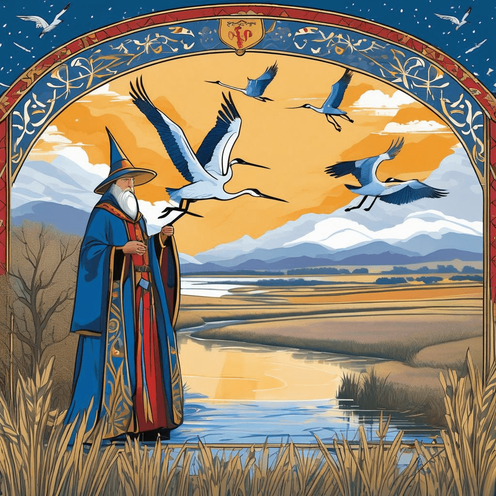
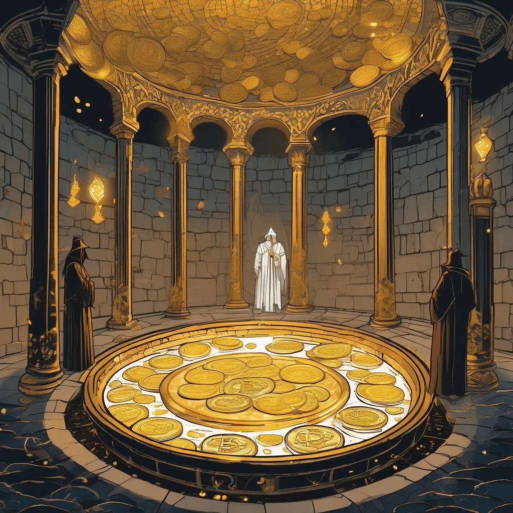
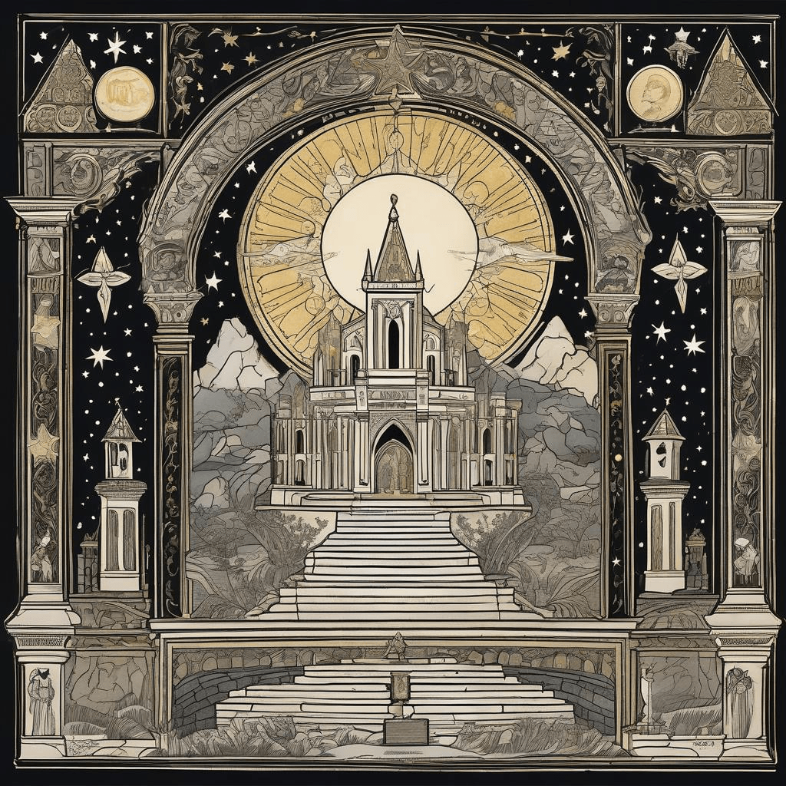

Chronicle Entry
February 16, 2026
Upon this Glorious Sixteenth Day of February, Grand Magus Alistair doth perceive most wondrous portents in the natural order of our blessed Midwest! The Great Crane Migration hath commenced in earnest, with half a million of these noble birds staging along the Platte River in our sister Kingdom of Nebraska. Verily, 'tis a spectacle to rival any enchantment in mine considerable arsenal! These majestic creatures, standing taller than a yearling calf, gather in numbers that darken the river valleys. This, dear subjects, is what happens when kingdoms maintain proper stewardship of wetlands rather than paving every marsh for bureaucratic edifices.
Meanwhile, the ancient tokens of digital prosperity continue their celestial dance, with Bitcoin ascending to sixty-seven thousand, nine hundred and nineteen golden pieces! The sorcerers of traditional banking continue their hand-wringing about these magical currencies beyond their control, yet the common merchant and tradesman recognize true value when they perceive it. 'Tis the very essence of freedom, unfettered by the meddlesome fingers of central banking wizards who believe themselves wiser than the market itself.

✨ Grand Crane Migration Spectacle
The realm of technological sorcery brings both triumph and tribulation. Mine scrying pools reveal that the Ministry of Justice in the distant Kingdom of Britain hath ordered the wholesale destruction of their largest repository of court chronicles! Imagine, if thou wilt, centuries of judicial wisdom cast into the void like so much chaff. This is what transpires when bureaucrats value expediency over preservation. Meanwhile, the venture capitalists of Andreessen Horowitz traverse the European territories seeking the next great unicorn enterprise, proof that true innovation flourishes when capital flows freely without governmental interference.

✨ Bitcoin Scrying Pool Vision
The Kingdom mourns today the passing of the legendary bard Robert Duvall at ninety-five winters, whose performances in the epic tales "Apocalypse Now" and "The Godfather" shall echo through eternity. A master of his craft who brought gravitas to every role, reminding us that excellence requires no magical shortcuts, merely dedication and authentic skill!

✨ Legendary Bard Memorial Tribute